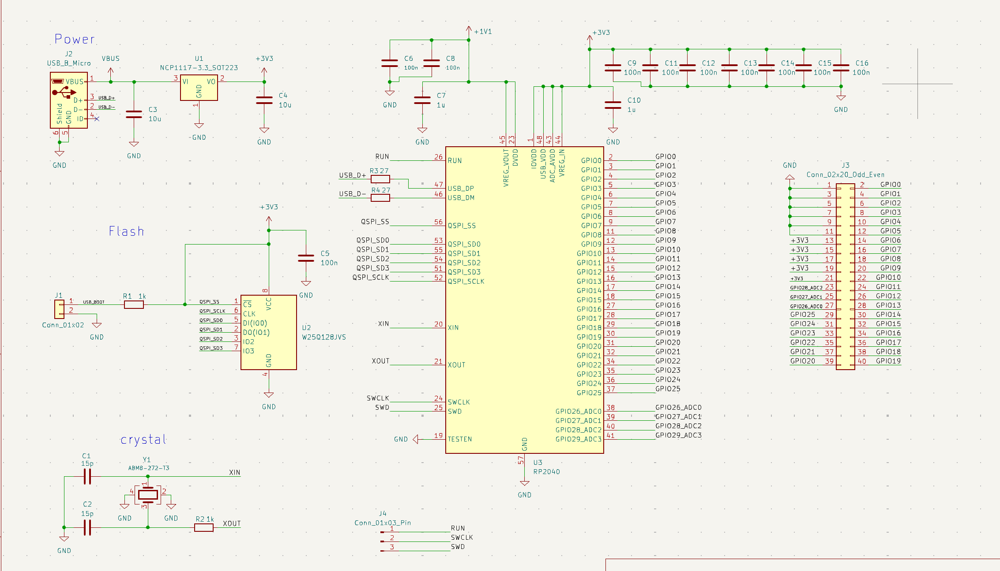
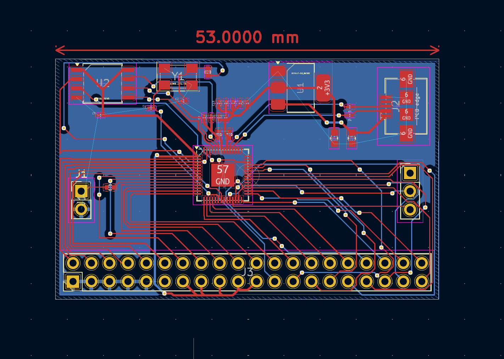
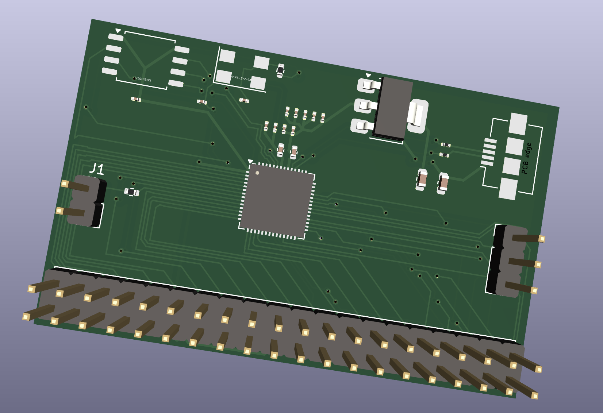

Project
RP2040 microcontroller
The inspiration for this project came from my interest in raspberry pis. I got my first raspberry pi pico from microcenter in cambridge,
it was a starter kit and it had all the little sensors and starter code that you could use. I made a few small projects like light sensor that
would change based on your proximity, or a color memorization game iwth a combonation of buttons, LEDS, and a 0.96 OLED screen to keep score.
After some years, getting more raspberry pis, both picos, the zero, a 4B, and even working with some arduinos and an ESP32 I decided to try and
create my own microcontroller. Just a basic one that would allow me to simualte the use case of a araspberry pi pico with C and python.
In my research I found a wonderful guide to harddware design with rp2040, which is the chip used with the raspberry pi pico, it was a comprehensive
book with walkthroughs and also was perfect for my use case(LINK)

The main program I used for my PCB design was KICAD. I thought it was very begineer friendly and easy to learn but definetly hard to master. I wouldn't say it
is light weight because it offers a wide range of features, some that I am still trying to figure out. My biggest issue I would say was learning the
components. I already knew what capacitors and resitsors did since I have taken physics already. When it came to crystal oscialltors, how to integrate
the usb connection, and other concepts that involve the easy components such as pull down resistors and what each pin on the RP2040 did.

Once I finally got it down I used JLCPCB to convert my pcb layout to an actual baord. After waiting a couple weeks it finally came and...I messed
up. when I opened the box it looked so unreasonably small and I had no idea why. I know raspberry pi picos are small but they are not this small.

After carfeully looking at it I saw that the pin holes where way too small. I had mistakingly made the holes way to small, whihc made the board
size way to small as well, so I did not try to mount any of the other components onto this board. Instead I used it to help get better at
using solder and solder paste on pads versus through hole which I am use to.